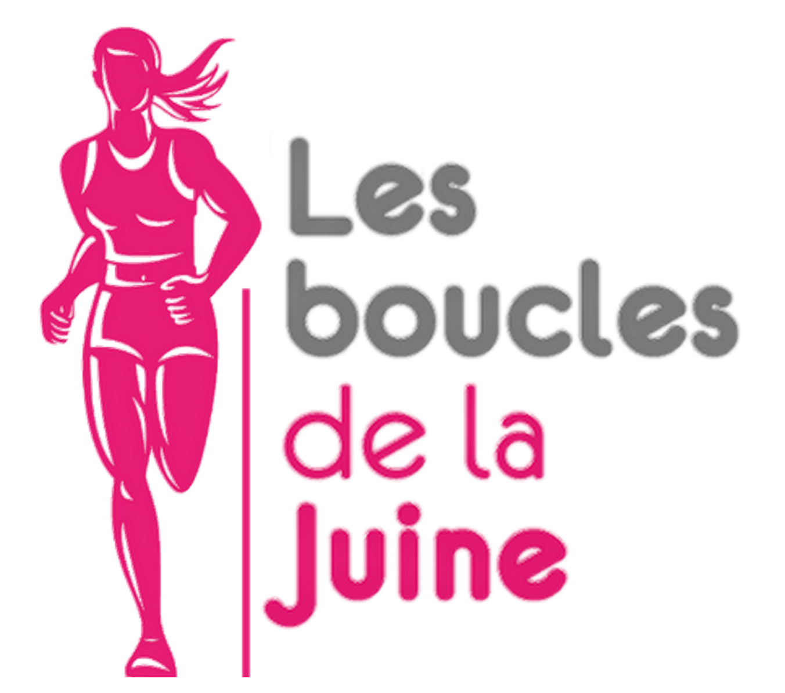
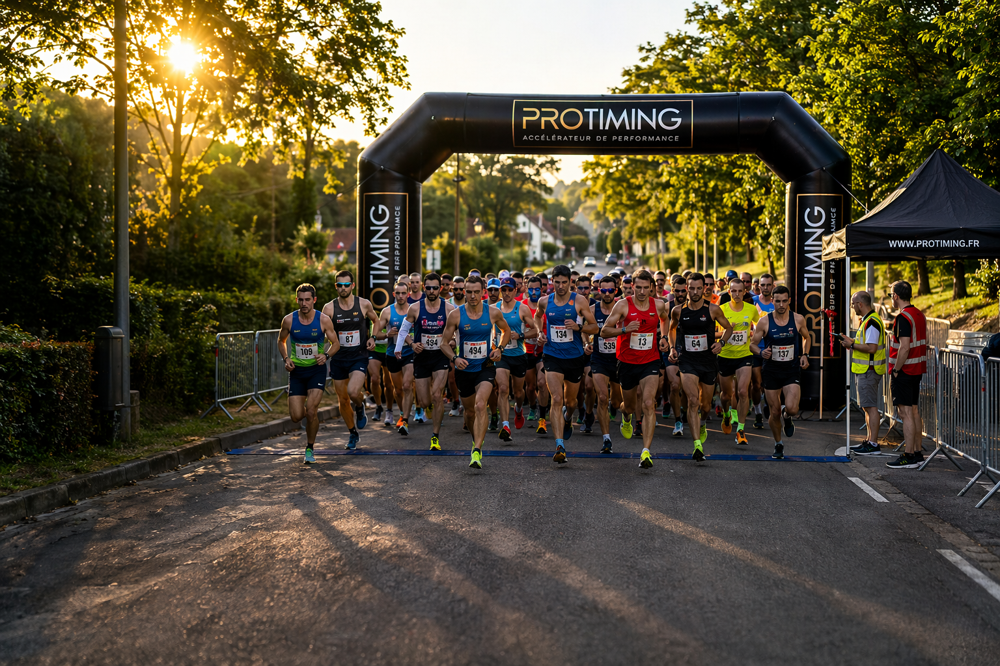

1
1988 · La naissance
Création des premières Boucles de la Juine avec 116 coureurs sur le 15 km et des courses enfants de 900 m et 1 800 m.

Une course née autour d’un 15 km devenu emblématique, portée par des bénévoles, des villages et une envie simple : faire vivre le sport au cœur de la vallée de la Juine.

Les Boucles de la Juine ont toujours été associées à Saclas, à la vallée de la Juine et à l’esprit de village qui accompagne les grands rendez-vous sportifs locaux.
La première édition des Boucles de la Juine voit le jour en 1988. Dès le départ, l’événement rassemble les coureurs autour d’un parcours de 15 km et propose également des courses enfants, afin d’ouvrir la journée à plusieurs générations.
Au fil des années, la course devient un rendez-vous régulier du calendrier local. Malgré deux années d’absence en 2005 et 2006, l’épreuve conserve son identité et son attachement au territoire.
À partir de 2016, l’organisation évolue pour répondre à la demande des coureurs et au manque de semi-marathons dans le département. Le 15 km est alors abandonné au profit d’un semi-marathon accompagné d’un 11 km.
Le semi devient le « Semi de la Juine », tandis que l’esprit des Boucles continue d’exister à travers les formats proposés et l’engagement des bénévoles.
La nouvelle dynamique engagée par l’OMS marque le retour de l’ADN historique : un événement plus lisible, plus accessible et tourné vers l’inclusion.
Une chronologie simple pour comprendre l’évolution des Boucles de la Juine, de leur création à la relance actuelle.
Création des premières Boucles de la Juine avec 116 coureurs sur le 15 km et des courses enfants de 900 m et 1 800 m.
L’épreuve est reconduite année après année, avec deux interruptions en 2005 et 2006, pour un total de 26 années d’organisation.
Après l’interruption, les Boucles repartent et confirment leur place dans la vie sportive locale de Saclas et de la vallée.
L’organisation lance un 21,1 km pour répondre à la demande des coureurs. Le semi devient le Semi de la Juine et le 11 km conserve l’esprit des Boucles.
Avec un nouveau bureau de l’OMS, le 15 km historique revient, accompagné de formats 9 km et 6 km pour rendre l’événement plus accessible.
L’histoire des Boucles se poursuit avec une ambition claire : garder la tradition, tout en ouvrant la course au plus grand nombre.
Le retour du 15 km remet au centre la distance historique qui a façonné l’identité de la course.
Les formats 6 km et 9 km permettent à davantage de participants de rejoindre l’événement.
Le projet de joëlette donne une dimension inclusive et concrète à cette nouvelle édition.
Rendez-vous à Saclas le 27 septembre 2026 pour écrire une nouvelle page des Boucles de la Juine.